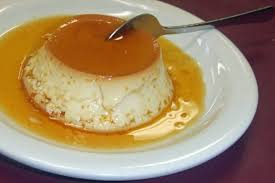
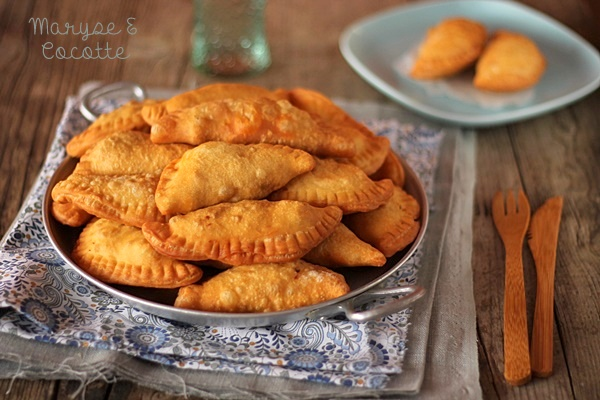
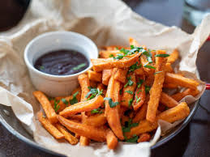

Menus Grillades

- poisson-braise : 2000F
- Poulet braisé Cuisse : 1500F
- Poulet braisé aile : 500F
- Poulet braisé pilon: 1000F
- Cotis braisé : 1000F
- Saucisse : 500F
- Rognon : 500F
- Rateau : 500F
- Ragoût : 1000F
Menus Pancakes

- Pancakes au chocolat : 250F
- Pancakes aux raisins : 250F
- Pancakes à l'orange : 250F
- Pancakes à la confiture : 250F
- Pancakes au miel : 300F
- Pancakes aux koko : 200F
- Pancakes nature : 150F
Menus Crêpes

- Crêpes au chocolat : 200F
- Crêpes à la confiture : 250F
- Crêpes à l'orange : 250F
- Crêpes fourrées : 500F
- Crêpes nature : 150F
Menu Flans
- Flans aux raisins secs : 1500F
- Flans à l'orange : 1500F
- Flans au rhum café : 1500F
- Flans aux koko : 1500F
Menu Salades

- Salade verte : 2000F
- Salade de fruits : 2000F
Menu Pastels
- Pastel : 250F
- Pastel fourrées : 500F
Boissons Naturelles
- Bissap : 1000F
- Jus de gingembre : 1000F
- Jus de lait caillé : 1000F
- Jus de cocktail : 1500F
Accompagnements
- Riz : 500F
- Manioc : 500F
- Frite : 500F
- Beignet : 500F
- Patates : 1000F
- Couscous : 1000F
- Pomme de terre : 1000F
Zone & Tarifs Livraison
- Nouveau port : 2000F
- Zone de Favome : 3000F
- route du cap : 2000F
- Autres quartiers : 1500F